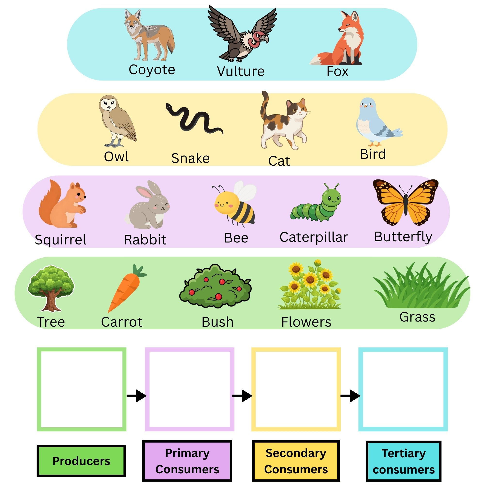

Master the movement of energy and matter through ecosystems.
You will need to complete each portion of this interactive in order. You will recieve a green check mark on the left hand side Next to the title to show you are done. Once all portions are completed you will then unlock a mastery quiz. You must get a 70% or higher to recieve your certificate of completion which you will then screen shot and load into your sumbmission on canvas.
Food Chains and Food Webs
Food chains and food webs are diagrams that represent feeding relationships. Essentially, they show who eats whom. In this way, they model how energy and matter move through ecosystems.
Food Chains
A food chain represents a single pathway by which energy and matter flow through an ecosystem. Food chains are generally simpler than what really happens in nature.
Food Webs
Food chains are not isolated in reality; most species consume multiple species and in turn are consumed by multiple other species. An interconnected network of multiple food chains occur called a food web.
Source: CK-12 Foundation. (2024). Food Chains and Food Webs.
Identify the Roles
Using the Ohio Food Web below, click the name of an organism that fits the role.

Pyramid of Energy
Energy flows through the food chain from one trophic level to the next. However, only about 10 percent of the total energy is actually transferred. The rest is lost as heat or used for metabolism.
The 10% Rule is a fundamental concept. It explains why there are rarely more than five trophic levels in a food chain.